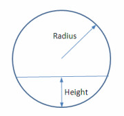

If you know the radius of the circle and the height of the segment, you can find the segment area from the formula below.
The result will vary from zero when the height is zero, to the full area of the circle when the height is equal to the diameter.
where:
r is the radius of the circle of which the segment is a part.
h is the height of the segment.
Note: The result of the cos-1 function in the formula is in radians.
If you know the central angle of the segment (the angle subtended by the segment at the center of the circle) you can use the method Area of a circular segment given the central angle.

This calculation is useful as part of the calculation of the volume of liquid in a partially-filled cylindrical tank. For more on this see Volume of a horizontal cylindrical segment.
Use the calculator below to calculate the segment area given the radius and height of the segment, using the formula described above

| Radius | |
| Segment height | |
| Area | |
Make sure you are using the same units for both measurements.